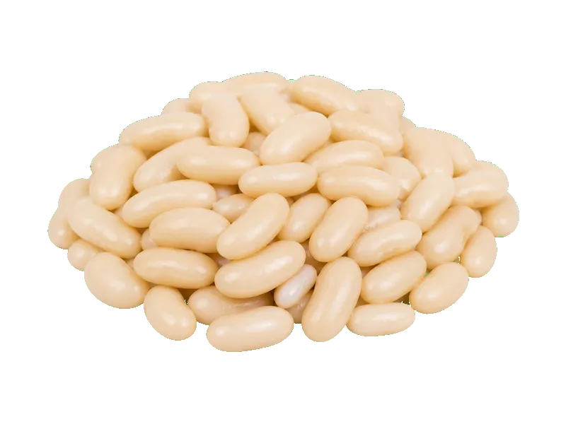

Warzywa
Fasola biała (gotowana)
Fasola biała (gotowana) to produkt z kategorii Warzywa. Na 100 g znajdziesz 6 g białka (proteinów), 102 kcal kalorii, 17 g węglowodanów oraz 0.5 g tłuszczu — idealne dane przy zdrowym odżywianiu, odchudzaniu lub budowie masy mięśniowej. Współczynnik ok. 17.0 kcal na 1 g białka pomaga porównać gęstość odżywczą. Bigos wege albo sałatka z puszki.
Kalorie102 kcalna 100 g
Białko / proteiny6 g
Węglowodany17 g
Tłuszcz0.5 g
Cena (szac.)~1,23 złza 100 g
Ceny zaktualizowano: maj 2026 (szacunek — ceny w popularnych supermarketach)
Porcja: porcja (150g)
| Kalorie | 153 kcal |
|---|---|
| Białko | 9 g |
| Węglowodany | 25.5 g |
| Tłuszcz | 0.8 g |
| Cena (szac.) | ~1,85 zł |
Szczegółowe składniki odżywcze na 100 g
| Wartość energetyczna (kalorie) | 102 kcal |
|---|---|
| Białko (proteiny) | 6 g |
| Węglowodany | 17 g |
| Tłuszcz | 0.5 g |
| Tłuszcze nasycone | 0.1 g |
| Tłuszcze nienasycone | 0.4 g |
| Witaminy i minerały | Witamina C, Kwas foliowy, Potas |
| Współczynnik kcal / 1 g białka | 17.0 |
| Cena produktu (szac. za 100 g) | ~1,23 zł |
| Cena za 100 g białka (szac.) | ~20,56 zł |